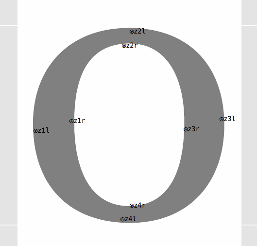
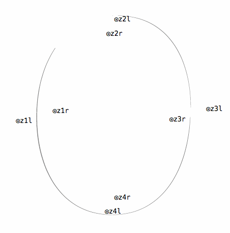
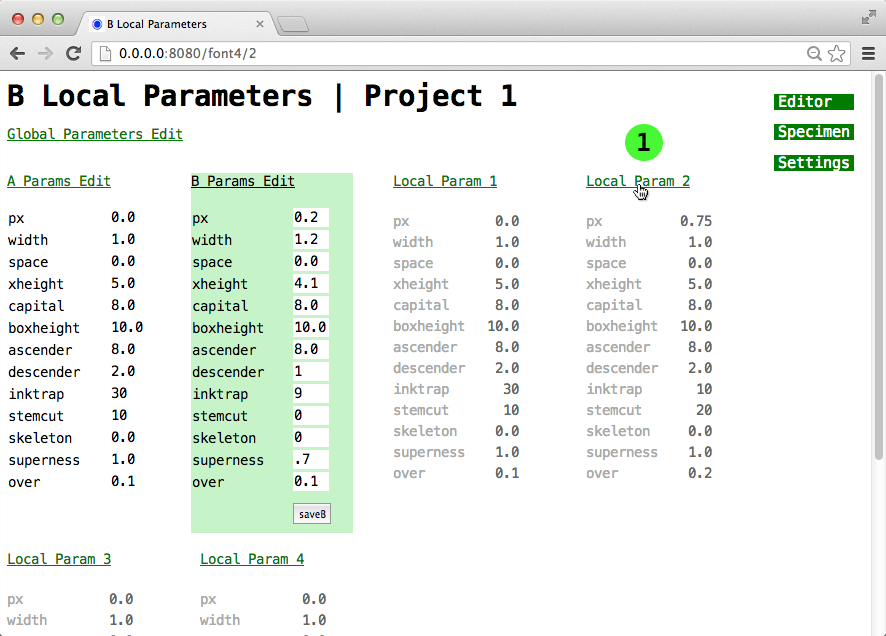
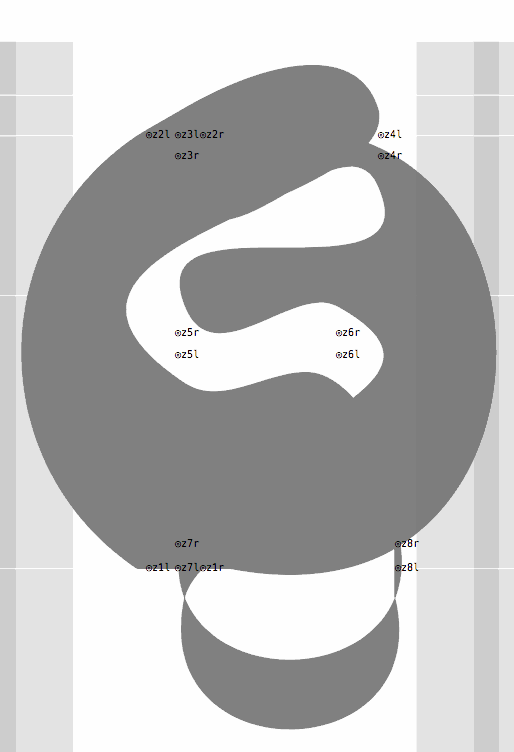
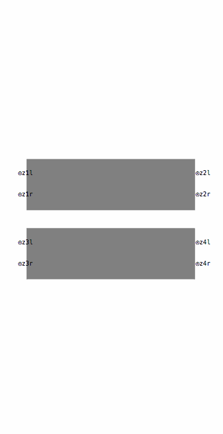
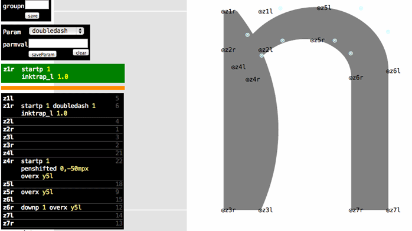
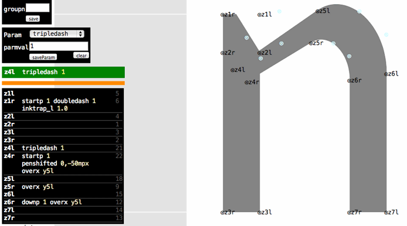
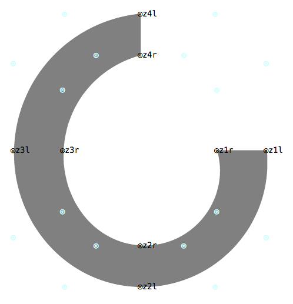
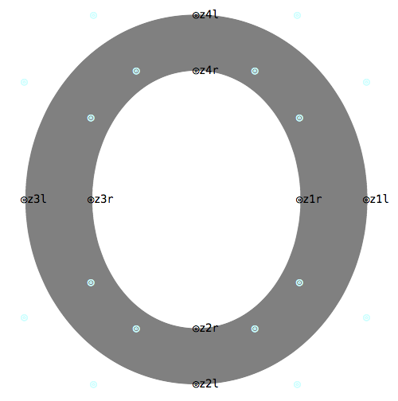

*Metapolation between FontA and FontB*
Starting Metapolator
The first screen is the 'Settings' screen.

1. Click the Project Number you wish to work on.
2. Enter the Project Name, FontA and FontB if not already filled in.
3. Select the glyph you wish to edit.
4. 'Edit' to go to the Editor. If you are starting a new project, you may wish to edit the Global and Local Parameters first.
UFO Preparation
-
- Prepare outlines
- Label z-points
- Rename glyphs and .glif files
1. Preparing outlines
Metapolator requires UFOs where shapes are broken up into constituent parts or 'strokes'. Almost all glyphs contain composite shapes which will require splitting up into seperate 'strokes'. Here are some examples:
Almost all glyphs contain composite shapes which will require splitting up into seperate 'strokes'. Here are some examples:


Stemcut
An extra z-point pair is required preceding/following (depending on ordering) the z-point where a stemcut will be applied.
*An 'n' before and after adding an extra point pair for stemcuts*

*An 'n' with a stemcut and stemshift applied to the top z-point. The example on the right also has a down function at the 2nd point to create a smooth transition*
Inktrap
An inktrap is similar to a stemcut as they also requre an extra z-point. The z-point pair should be parallel to the other z-point pairs; in this case the points are horizontal.
2. Labelling z-points

Currently every on-curve point needs to be manually labelled in consecutive pairs in the 'z–l' and 'z–r' format; for example, z1l, z1r, z2l, z2r, and so. Each pair creates a z-point. This is the order in which a stroke will be rendered. A new stroke in the same glyph continues the numbering rather than starting from z1 again.

1. Click a blank point.
2. Enter the point name.
3. Save Take care to keep the l and r sides consistent with the direction which the pen is travelling – a useful metaphor is to imagine the pen as a car: a sudden reversal in the left and right side probably means disaster!

3. Renaming glyphs and .glif files
Due to restrictions within Metafont, the .glif filenames and 'glyph name' (an xml tag within the .glif file) must be renamed according to the numeric filenames set out in glyphnames.txt (also found in the local folder of Metaplator). *Currently this process is done manually but we would like to automate this in the near future*Rename .glif files
The .glif files are found inside the .ufo/glyphs/ folder. To access, right click on the ufo and 'Show Packaged Contents'.Rename 'glyph name'
A .glif file is an xml file that describes the glyph. The<glyph format="1" name="a"> tag must be changed so that it corresponds to the numeric value; for example <glyph format="1" name="65">
Global Parameters
Excluding metapolation, these parameters correspond to the values in the original UFO font. The input type is a floating point. *Global 1 and Global 2 are the parameter sets currently available, click either to set and edit*
*Global 1 and Global 2 are the parameter sets currently available, click either to set and edit*
Local Parameters
Metapolator uses the Local Parameters at FontA and FontB for interpolation. The input type is a floating point.| Parameter | Description |
|---|---|
| **px** | Extra 'pen width', default is 0. Adding px increases the weight of the font – which will usually require compensations and adjustments in the z-point Functions, such as 'pen width', 'over' and 'pen'/'pointshifting'. |
| **width** | The width of the typeface, default is 1. |
| **space** | Spacing adjustment. Default is 0. Positive value increases spacing; negative value decreases spacing. |
| **xheight** | The x-height. If the value given here is the equal to mean in Global Parameters, then no x-height adjustment is made. |
| **capital** | The cap-height. If the value given here is the equal to cap in Global Parameters, then no cap-height adjustment is made. |
| **boxheight** | The total height between cap- or ascender height . If the value given here is the equal to box in Global Parameters, then no total height adjustment is made. |
| **ascender** | The ascender height. If the value given here is the equal to asc in Global Parameters, then no ascender height adjustment is made. |
| **descender** | The descender height. If the value given here is the equal to desc in Global Parameters, then no descender height adjustment is made. |
| **inktrap** | The size of inktraps when an inktrap_l or inktrap_r function is applied to a point. |
| **stemcut** | The size of stem cuts when a stemcut function is applied to a point. |
| **skeleton** | The amount of reduction towards or addition away from the monolinear skeleton. Default is 0. -1 gives you an almost razor-thin skeleton.
The skeleton parameter is useful when you want to remove contrast.  Subsquently, px can be added to create a monolinear typeface.  |
| **superness** | The round/squareness of a superquarter – when using a superleft or superright z-point function. |
| **over** | The amount of overshoot. 0.1 would be equivalent to 10 units in a UFO file. |

Z-point Functions
These are the Metafont functions that are applied to individual z-points. This is how lettershapes are sculpted. Examples can be found by clicking the function names in the table. In most functions there is no difference between applying a function to z-l or z-r, the calculation is made either by taking a pair in account or using the center point; for example, an inktrap_l can be similarly applied either to a z3l or z3r. Common sense should apply on which functions will be in conflict; for example, a leftp can not be used on the same point with a rightp. Exceptions are point-coordinate related functions, like penshifted, pointshifted and all overshoot functions.Important
Most of the z-point functions only need to be applied to FontA. The following functions can take a different value in FontB (by specifying it again on the same point) to interpolate between. In the current version a value in FonatA AND FontB is mandatory.-
- dir
- dir2
- angle
- penwidth
- tension
- tensionand
- superright
- superleft
| Function | Input | Description |
|---|---|---|
| **startp** | 0 or 1 | Starts a new penstroke. Z1 will always require a startp – otherwise Metafont will return an error.
 'g' glyph as a single penstroke.  'E' glyph being formed with the addition of startp commands then penshifted commands.  '=' glyph before and after applying a startp to the second stroke. |
| **doubledash** | 0 or 1 | Creates a straight line to the next z-point (z+1). This is required because Metafont's default mode of drawing is to connect points with curves.
doubledash and tripledash An inktrap_l has been applied but the penstroke is not straight due to the nature of Metafont's default curve drawing. So a doubledash is added to straighten the stroke. The difference between doubledash and tripledash. |
| **tripledash** | 0 or 1 | Creates a straight line which blends smoothly into the next z+1. The angle of the tangent at z+1 will be equal to the angle between z and z+1. |
| **superleft** | Float | Creates a left quarter of a superellipse. Superquarters are not as flexible as ordinary curves – direction and tension commands are not applicable and pointshifting is difficult to tame with superquarters. However, interesting results are possible. |
| **superright** | Float | Creates a right quarter of a superellipse. See above. |
| **leftp** | 0 or 1 | Direction at z will be leftwards. |
| **rightp** | 0 or 1 | As above but rightwards. |
| **downp** | 0 or 1 | As above but downwards. |
| **upp** | 0 or 1 | As above but upwards. |
| **dir** | Foat | As above but at the specified. Metafont angles are measured in degrees counterclockwise from a horizontal rightward line. See Metafont clock. |
| **leftp2** | 0 or 1 | Direction going into z+1 will be leftwards. **Important:** direction commands (leftp, rightp, downp, upp, dir) can not be used on the last z point as it reqiures a z+1 point. Direction2 commands (lefpt2, rightp2, downp2, upp2, dir2) are used on the z-point before the final one in a penstroke to specify the terminatng direction. For example, if z8 is the last z-point in a penstroke, leftp2 would be applied to z7 to create a leftwards travelling ending at z8. |
| **rightp2** | 0 or 1 | Similar to leftp2 but rightwards. |
| **downp2** | 0 or 1 | Similar to leftp2 but downwards. |
| **upp2** | 0 or 1 | Similar to leftp2 but upwards. |
| **dir2** | Float | Similar to leftp2 but at the angle specified. |
| **tension** | 3 digit integer | Specifies the 'tension' of a curve. All curves have a default tension of 100. 075–400 is the allowed range. Higher values creates a straighter line (400 usually produces a straight line), while a decrease is looser. |
| **tensionand** | 6 digit integer | Asymmetrical tension setting, the first 3 digit specifies the first half of a curve, while the next 3 specifies the second half. |
| **cycle** | 0 or 1 | Specified on the last z-point in a penstroke to create a stroke loop. Used in glyphs such as 'o' to create a circle.
A cycle command turns a penstroke into a closed loop. For example an 'o' without a cycle looks like this:  Once a cycle function is applied to z4, the loop is closed:  |
| **penshifted** | String | Shifts the point after other transformations have been applied. There is usually no difference between penshifted and pointshifted – it becomes important when using superleft or superright. See instructions on how to create 'magnetic' points that attach to other points and more. |
| **pointshifted** | String | Shifts the poiint before transformations have been applied. |
| **angle** | '+string' or '‑string' | Changes the pen angle. Enter equations such as: '+20' or '-30'. |
| **penwidth** | Float | Multiplies the pen width by the value entered. 1 keeps the width, 0.5 is half, 2 is double and so on. |
| **overx** | y – l or y – r | Used to create overshoots by the amount specified in the over Local Parameter. Enter the the y – l or y – r point (y3l, y4r, and so on) which corresponds to where the overshoot should occur. Overx can also be applied to points adjacent to the overshoot to shift the whole curve instead of one point – this keeps the shape of the curve intact. See Overshoot whole curve. |
| **overbase** | y – l or y – r | Similar to overx but at the baseline. |
| **overcap** | y – l or y – r | Similar to overx but at the cap-height. |
| **overasc** | y – l or y – r | Similar to overx but at the ascender. |
| **overdesc** | y – l or y – r | Similar to overx but at the descender. |
| **ascpoint** | y – l or y – r | Tags a point as part of the ascender to prevent it from being affected by the xheight, capital, or descender parameter. *Currently not in use.* |
| **descpoint** | y – l or y – r | Tags a point as part of the descender to prevent it from being affected by the xheight, capital, or ascender parameter. *Currently not in use.* |
| **stemcutter** | Float | Used in conjuction with stemshift to create a stem cut. A value of '1' decreases the penwidth by the amount specified in the stemcut Local Parameter. The stem will not be straight so a stemshift and other corrections are needed. **Important:** The ufo must be prepared with extra z-points, see UFO Preparation. |
| **stemshift** | Float | -1 straightens the left side of the stem, 1 straightens the right side. Other values create non-straight strokes. See More. **Important:** The ufo must be prepared with extra z-points, see UFO Preparation. |
| **inktrap_l** | Float | Decreases the penwidth by the amount specified in the inktrap Local Parameter and straightens up the stem on the left side of the penstroke. Used in conjuction with inktrap_r on a colliding penstrokes to create a symmetrical inktrap. The difference between inktrap_l/r and stemcutter & stemshift is that the inktrap_l/r function will always create a straight edge, whereas using stemscutter & stemshift can create results like this. **Important:** The ufo must be prepared with extra z-points, see UFO Preparation. |
| **inktrap_r** | Float | As above but on the right side. |
{kind=link}